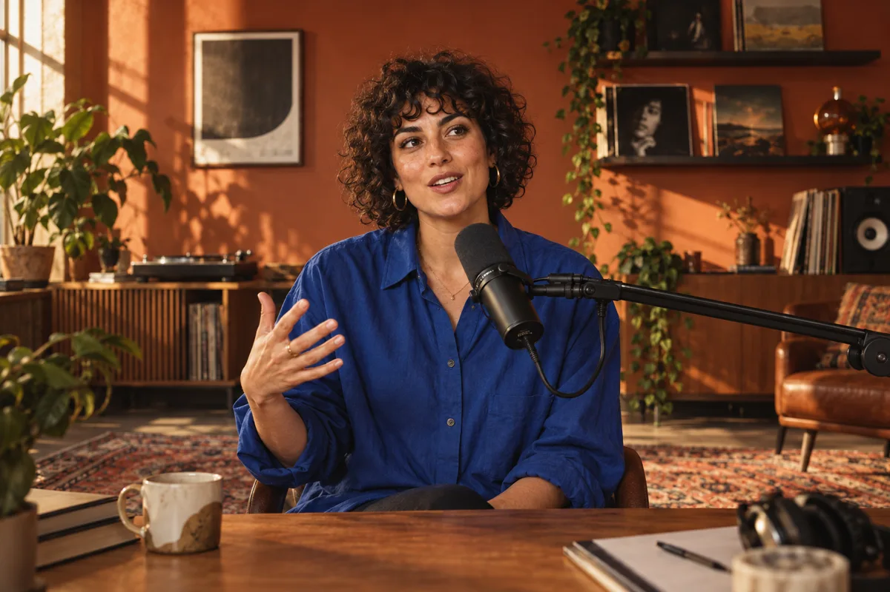
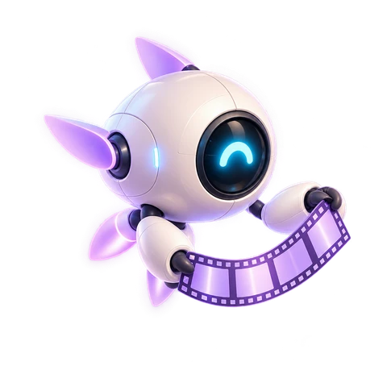

01
Find the part they’ll replay.
AI picks complete moments, scores their potential and checks the ending. You choose what makes the cut.
Turn long videos into can’t-scroll-past clips.
Your editing apprentice. AI finds the moments. You make them yours.
Windows, macOS & Linux · No subscription · Bring your own AI key

THE CREATIVE PROCESS EP. 024That idea?
Hit record.
Make something
only you can.
Start before
you’re ready.
AI finds self-contained moments with a hook, a story and a payoff.
01 / LESS BUSYWORK. MORE GOOD STUFF.
You already did the hard part: making something worth watching. Get more out of it without starting from scratch.
AI picks complete moments, scores their potential and checks the ending. You choose what makes the cut.
Word-by-word highlighting, 12 built-in styles and your own fonts. Burned into every export, exactly how you like them.
Speaker-aware reframing follows the conversation. Add automatic zooms and tighten pauses to keep things moving.
02 / AI ASSISTS. YOU DIRECT.
Trim the moment. Dial in the captions. Reframe the shot. A real desktop editor for the details that make it yours.


Actual app screenshots. The demo project uses generated test footage.
03 / FROM LONG VIDEO TO NEXT POST

Your editing apprentice.
Meet your new workflow ↗Import a local video or paste a supported video URL. Podcasts, interviews, webinars, that stream you nearly forgot about.
MP4 · MOV · MKV · WEBM + MOREGet a transcript and suggested highlights. Or skip clip discovery and caption your entire video instead.
YOUR AI KEY · YOUR CHOICEAdjust the trim, captions and framing. Export a finished MP4, ready for you to upload wherever your people are.
NO FORCED WATERMARK. EVER.04 / OPEN SOURCE. OPEN POSSIBILITIES.
Creative tools should give you more freedom. Cutawan is free, MIT-licensed and built in the open. Use it. Inspect it. Make it better.
Explore the source ↗Help shape what’s next ↗Video editing, face tracking, rendering and export run on your machine. Your original video is not uploaded to a hosted editor.
With the default OpenAI setup, extracted audio, transcripts and sampled frames are sent for AI processing. Your API usage is billed separately.
No app-imposed processing-minute quota. No paid watermark removal. No subscription just to keep using your tools.
Yes. The app is free and open source under the MIT licence, including editing and export. With the default setup, you bring an OpenAI API key and pay the provider for transcription and AI analysis. These usage charges are separate from Cutawan; a ChatGPT subscription does not include API credits.
Yes, if you want AI-assisted clip discovery, captions and reframing in a desktop app you control. Cutawan is designed around local editing and export, with a bring-your-own-key AI setup. See whether Cutawan fits your workflow.
Your full source video stays on your machine. With the default cloud AI setup, extracted audio goes to transcription, while transcripts and sampled frames are sent for analysis. Editing, speaker tracking, rendering and export happen locally. It is not a fully offline workflow by default.
Absolutely. Choose “Caption the whole video” when setting up a project. You can add captions, choose the output shape, enable speaker tracking and auto zoom, then trim and export the result without running highlight discovery.
Cutawan has desktop builds for Windows, macOS and Linux. Choose the matching installer on GitHub Releases. macOS builds are currently unsigned; see the installation notes before your first launch. Performance depends on your hardware and source footage.
Yes. The MIT licence allows commercial use of the software. You are responsible for the rights to your source footage, music, fonts and any added images. Cutawan does not add a mandatory watermark.
Cutawan exports ready-to-upload video files and can help write post captions. You upload the files yourself. Automatic social publishing is not currently included.
YOUR NEXT POST STARTS HERE.
Your footage has more to give. Let’s find it.
Get Cutawan for WindowsChoose the .exe installer on GitHub Releases.
Free & open source · No Cutawan account needed · AI usage billed separately
Prefer to build from source? ↗